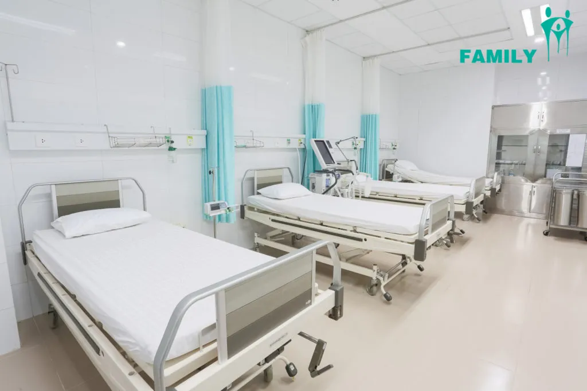

Chẩn đoán hình ảnh
Hỗ trợ thăm khám, chẩn đoán và chăm sóc người bệnh.
Trang thiết bịVì sức khỏe cộng đồng
Trang chủ / Chuyên khoa
HỆ THỐNG CHUYÊN KHOA
Tìm hiểu chuyên khoa và lựa chọn bác sĩ phù hợp với nhu cầu khám bệnh của bạn.
Lựa chọn khoa để tìm hiểu chuyên môn, lãnh đạo khoa và đội ngũ bác sĩ.
Đang tải chuyên khoa…
Chưa có chuyên khoa phù hợp. Hãy chọn bộ lọc khác hoặc đổi từ khóa.
Không gian thăm khám và trang thiết bị hỗ trợ chẩn đoán.
Hỗ trợ thăm khám, chẩn đoán và chăm sóc người bệnh.
Trang thiết bị
Hỗ trợ thăm khám, chẩn đoán và chăm sóc người bệnh.
Trang thiết bị
Hỗ trợ thăm khám, chẩn đoán và chăm sóc người bệnh.
Trang thiết bịMang theo giấy tờ cá nhân và kết quả khám trước đây. Với lịch online, đến check-in ít nhất 30 phút trước giờ hẹn.
Tìm hiểu chuyên khoa và lựa chọn dịch vụ khám phù hợp với nhu cầu của bạn.